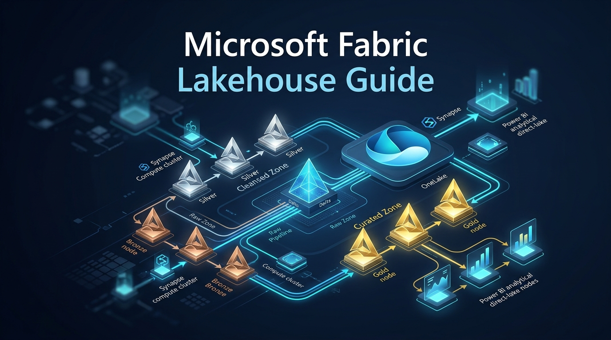

Generate Publication-Ready Technical Blogs
Enter a single topic title to automatically generate verified 1-to-1 CMS fields, an executive 1200×630 infographic banner, and publication-ready CKEditor content.
CMS Fields Ready for Copy-Paste
Copy each field directly into the MagnusMinds Admin "Create Blog" form.

Engine: Pure Vector Architecture Synthesizer (Instant, Zero Watermark, Brand-Free) 16:9 Widescreen
Starts cleanly at Introduction. Choose Visual Text or Source HTML.
AI Generation Engine
Enable real-time dynamic AI generation for 100% unique blogs
Deploy the included worker/index.js (Cloudflare) or api/generate.js (Vercel) so coworkers never need their own keys.
Get a free personal key from Google AI Studio (Free tier: 15 req/min, $0 cost).
• With Gemini API Key: Every blog generation calls Gemini 2.0 Flash to synthesize 100% unique, topic-specific prose, code, and tables.
• Without API Key: The built-in Semantic Context Engine handles topics locally with deep exploit/security and migration awareness.